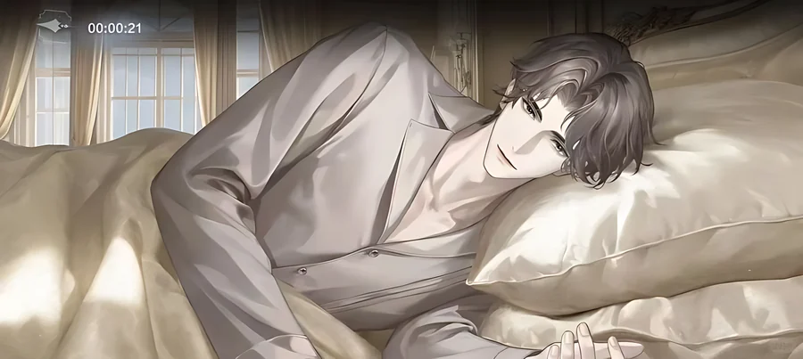
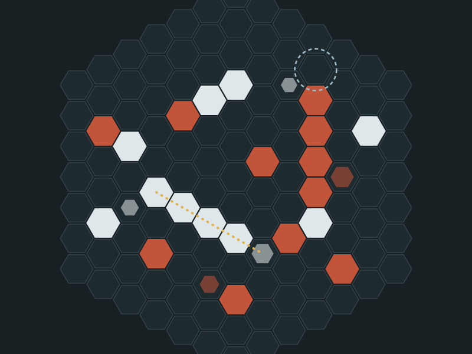
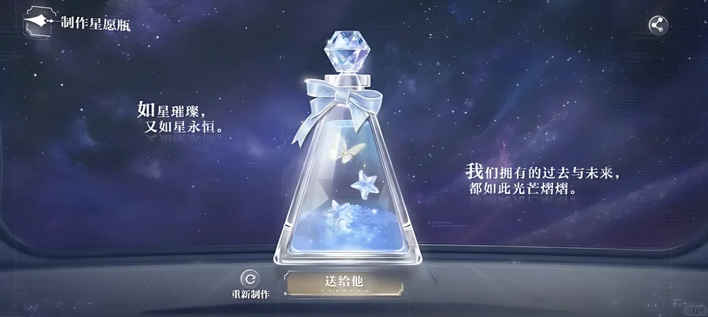
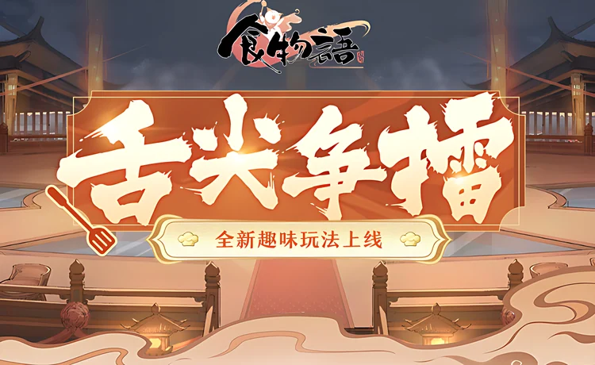
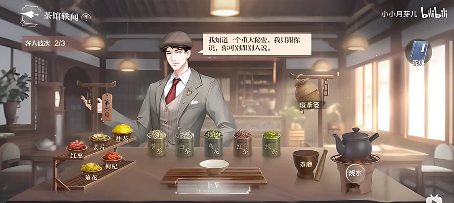

Five shipped features

Aurora Bedroom
A real-time companion space where he keeps his own 24-hour schedule, falls asleep on his own, and is allowed to say no. He is already there before the player does anything, and players started staying in a space they used to pass through.

Qimen Formation
A whole server plays one game of five-in-a-row (Gomoku). Players are randomly assigned to two factions, clear challenges on their own, and claim nodes together on one shared board. Three rotating commanders per faction can mark targets for everyone. Coordination for tens of thousands of players, without chat.

Wishes Across the Cosmos
A Valentine's event where the player makes the gift. Gather star sand across 12 hand-built levels with an AI-controlled companion, craft a wish bottle from six independent layers, and give it away. The game answers with a short poetic line instead of a score. Players shared their bottles on social media on their own.

Gourmet Arena
A 32-player knockout tournament where your own collection does not come in with you. Players draft six characters from random offers and field four, so matches are decided by choices, not by account strength.

Teahouse Gossip
A tea-serving event with no countdown timer. "No pressure" is built into the rules at three levels, and players noticed and said so.